Open Operating System for Jio AirFiber IDUs & Router Hardware
Maxnet is an open router operating system for modern hardware routers. Built on a tailored Linux kernel foundation with hardware flow acceleration, Maxnet delivers line-rate 1 Gbps Gigabit throughput, dedicated USB 3.0/2.0 subsystem access, zero telemetry, and complete local root control.
WHAT IS INSIDE MAXNET?
Tailored Linux LTS Networking Core
Maxnet operates on an optimized modern Linux long-term kernel featuring tuned virtual memory management, BBR congestion control, multi-queue network packet scheduling, and low latency task dispatching. It eliminates bloatware, proprietary carrier logging daemons, and hidden background monitoring processes.
Qualcomm PPE & MediaTek WED Hardware Offloading
Stock firmware often limits routing throughput through heavy CPU-bound packet parsing. Maxnet taps directly into hardware packet engines: Qualcomm PPE (Packet Processing Engine) on IPQ9574/IPQ9554 and MediaTek WED (Wireless Ethernet Dispatcher) & PPE on MT7986A, achieving line-rate 1 Gbps Gigabit packet switching with virtually zero CPU utilization.
Dedicated USB 3.0 & USB 2.0 Subsystems
Full driver support for peripheral connectivity: Qualcomm models feature a dedicated USB 3.0 SuperSpeed (5 Gbps) port powered by the Qualcomm QMP PHY for high-speed storage, network devices, and ADB tethering, while MediaTek models provide an integrated USB 2.0 HighSpeed (480 Mbps) port for diagnostics, modems, and smartphone control.
CAKE & FQ-CoDel Smart Queue Management (SQM)
Eliminate bufferbloat once and for all. Maxnet includes advanced Active Queue Management algorithms (CAKE and FQ-CoDel) that prioritize interactive traffic, voice, and competitive gaming packets over bulk downloads, guaranteeing minimal ping spikes during heavy network utilization.
ADBMAX Integrated Device Engine
A native management subsystem built exclusively for Maxnet. Directly manage Android handsets and attached cellular modems through ADB, enabling automated SMS routing, call log analysis, multi-device key imports, and automated diagnostic scripting directly from your router.
Privacy, Security & 100% Zero Telemetry
Stock firmware maintains continuous telemetry backdoors to corporate carrier servers. Maxnet completely severs these connections: no remote firmware overwrite backdoors, no telemetry, no forced provisioning, full nftables firewall configuration, and complete root terminal SSH access.
WEBUI & SYSTEM DESKTOP SHOWCASE
Authentic full-resolution desktop captures taken directly from the live Maxnet gateway (10.0.0.1) across all system configuration modules, daemons, and interfaces:
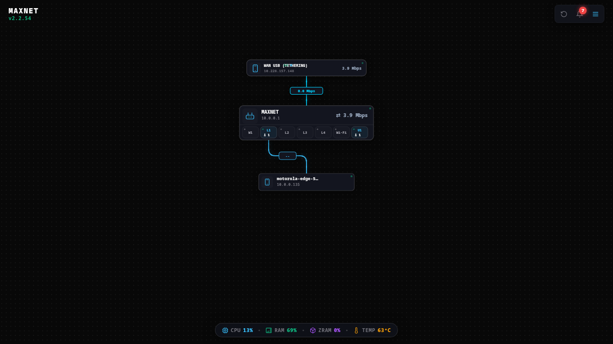
Live Network Topology & Real-Time Telemetry Dock
Maxnet features an interactive network canvas that maps your entire connection pipeline from external uplinks down to individual connected client devices. Real-time traffic vectors visually illustrate throughput between your primary WAN, cellular backup modems, dual-band Wi-Fi radios, and local Ethernet clients.
Pinned at the bottom of the interface is the live telemetry dock, streaming real-time processor utilization, memory allocations, and core router temperatures. You can click any connected node to inspect its assigned IP, MAC address, active upload/download speeds, and connection tier instantly.
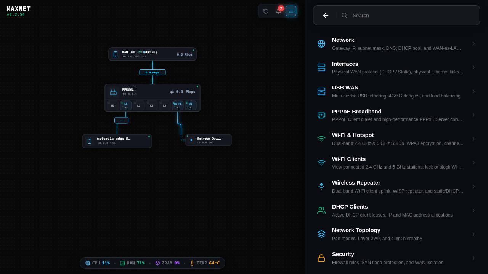
Centralized Settings Hub & Instant Configuration Search
The Settings Hub provides a clean, unified dashboard with direct access to every system control panel without digging through deep nested menus. An integrated instant search engine lets you quickly filter parameters, modules, and options as you type.
Subsystems are organized into logical sections covering Core Networking, Connected Smartphones, USB Storage, System Administration, and Hardware Gestures. Selecting any module opens its dedicated interface instantly without reloading the entire page.
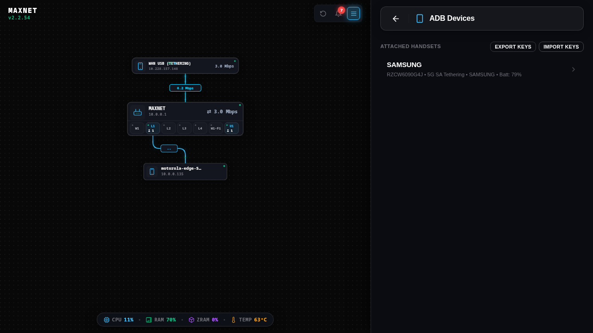
ADBMAX Android Engine & Cellular Telemetry Subsystem
ADBMAX is Maxnet's native smartphone integration engine. When you connect an Android phone over USB, the router communicates directly with the handset to display battery health, charging status, carrier network details, 5G/LTE bands, and live signal quality directly in your router dashboard without requiring phone root access.
It also includes remote phone actions such as remote reboot, wake/sleep triggers, airplane mode toggling for instant cellular IP renewal, and an in-browser SMS inbox viewer so you can easily review incoming verification codes and OTPs without touching your phone.
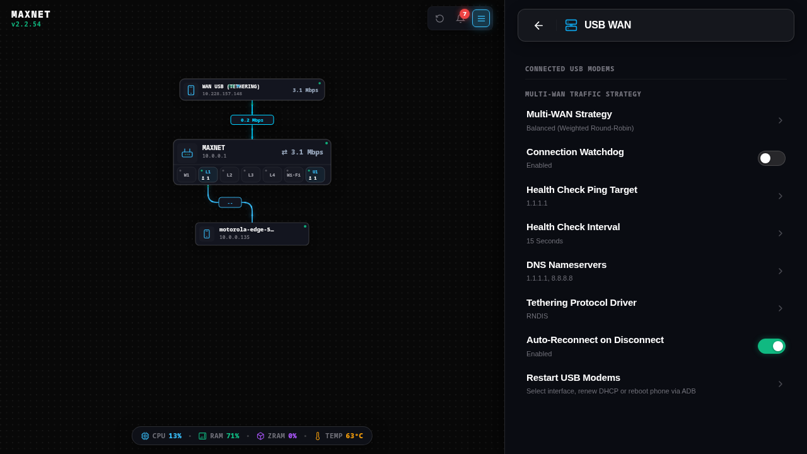
USB WAN Multi-Link Aggregation & Auto-Failover Watchdog
Ensure non-stop internet reliability with automated multi-WAN supervision. The watchdog monitors your primary fiber connection, tethered USB smartphone, and secondary cellular modems around the clock using continuous ping probes to verify real-world internet availability.
If your primary broadband drops, traffic switches automatically and seamlessly to cellular backup in under a second so ongoing calls, streams, and games never disconnect. When fiber service restores, the router safely transitions back to primary WAN and can power-cycle USB ports if a tethered modem ever freezes.
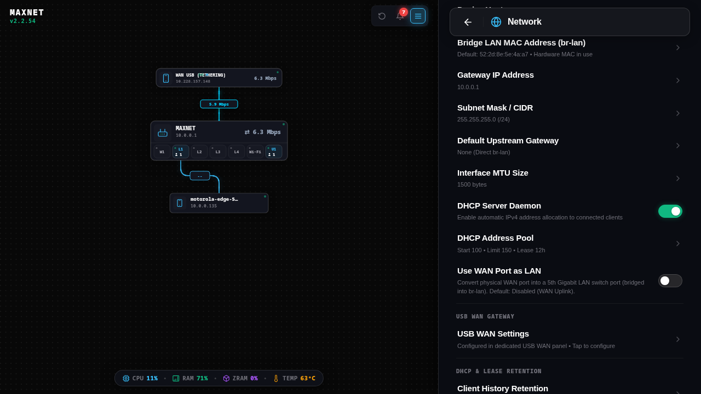
Core Routing, IP Management, DHCP & Encrypted DNS
A complete networking control panel for managing your gateway IP addresses, subnet masks, upstream WAN connection modes, and DHCP address pools. You can bind permanent static IP leases for servers, printers, and smart home appliances by MAC address.
Includes built-in support for custom upstream encrypted DNS resolvers like Cloudflare, Google, and Quad9, alongside hardware-accelerated packet forwarding to ensure your home or office network runs at maximum Gigabit throughput with minimal latency.
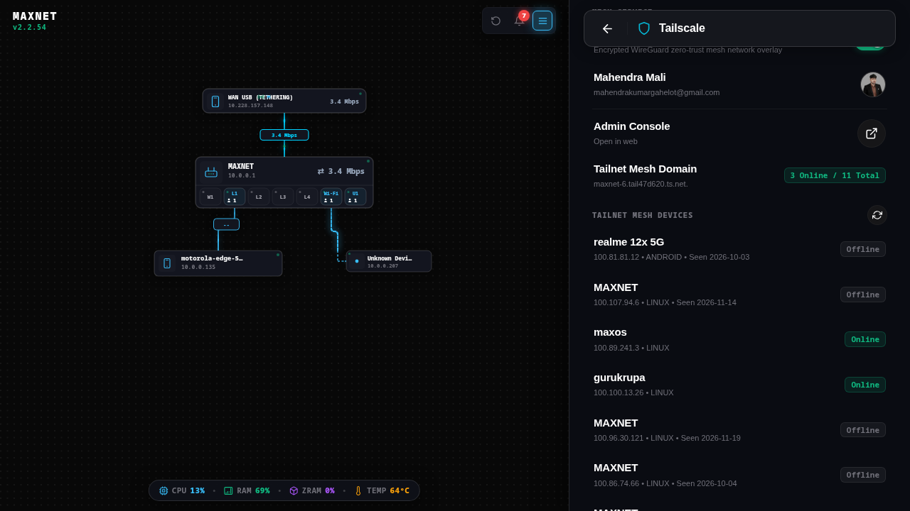
Tailscale Mesh VPN & Secure Remote Subnet Router
Access your home network securely from anywhere in the world without opening ports or configuring complex port-forwarding rules. Powered by modern WireGuard encryption, Tailscale connects your laptops, tablets, and phones directly to your router over an encrypted peer-to-peer mesh.
Maxnet can function as an advertising subnet router and secure exit node, enabling you to route public internet traffic through your trusted home gateway whenever you are connected to untrusted hotel or public Wi-Fi networks.
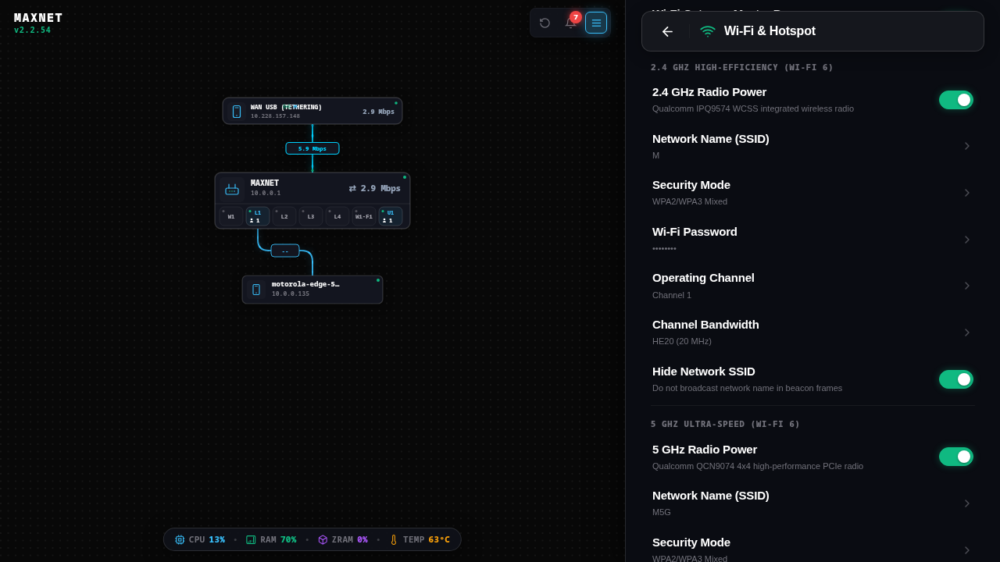
Wi-Fi 6 (802.11ax) Dual-Band Radios & 160 MHz Channels
Take full advantage of modern Wi-Fi 6 wireless performance with independent controls for both 2.4 GHz and 5 GHz radios. Supports ultra-wide 160 MHz channel bandwidths for multi-gigabit wireless throughput, custom transmit power, and fast channel scanning.
Configure advanced wireless security including WPA3-SAE encryption, multi-SSID guest networks with client isolation, and fast roaming protocols so your mobile devices switch smoothly between access points without dropping connections.
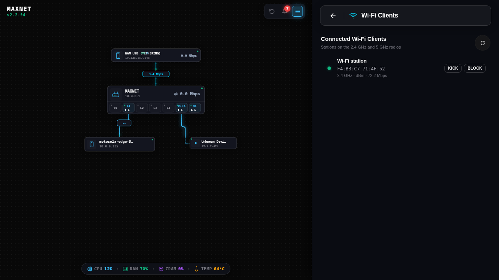
Connected Wi-Fi Clients Ledger & Signal Inspector
A real-time overview of every wireless device currently associated with your router across 2.4 GHz and 5 GHz bands. Each client entry displays its assigned IP address, MAC address, device hostname, connection frequency, and live signal strength meters.
Identify weak signal zones in your home by inspecting client signal quality in decibels. For administrative control, the dashboard lets you disconnect unwanted devices with a single click or permanently block unauthorized MAC addresses from rejoining.
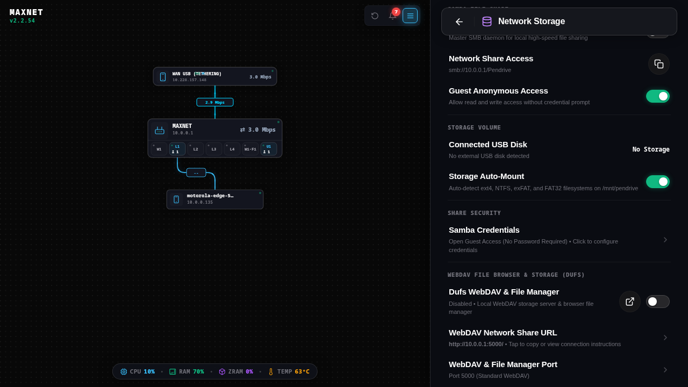
Samba 4 Network Storage & DufS Web File Browser
Transform your router into a high-speed Network Attached Storage (NAS) server by plugging in any external USB SSD or hard drive. Supports modern high-capacity filesystems including ext4, NTFS, exFAT, and FAT32 with automatic volume mounting.
Share files effortlessly across Windows, macOS, Linux, Android, and Smart TVs using high-performance Samba 4 network sharing. You can also browse, upload, download, and organize files directly through any web browser using the lightweight built-in file manager.
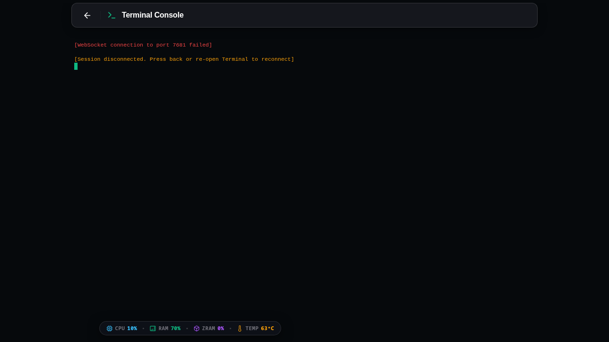
Root Web Shell & Interactive Command-Line Terminal
An integrated full-screen terminal emulator running directly inside your web browser. Delivers full command-line access with true-color ANSI support, smooth keystroke responsiveness, and clipboard copy-paste convenience without requiring external SSH desktop clients.
Advanced users and network administrators can monitor running processes, inspect kernel statistics, script custom network behaviors, and run Linux diagnostic utilities with zero installation or extra setup.
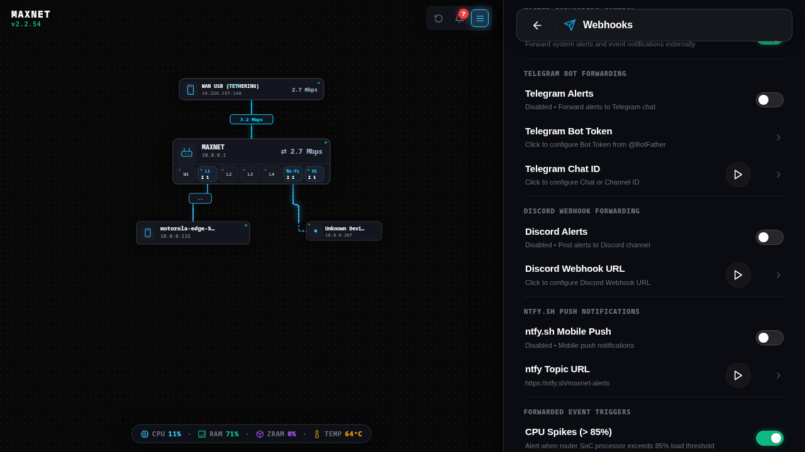
Automated Discord & Telegram Webhook Notifications
Keep track of your network 24/7 with autonomous instant notifications sent directly to your private Discord channel or Telegram chat. The alert engine sends real-time updates whenever internet failovers occur or when your primary connection restores.
You can also configure proactive alerts for hardware events such as high operating temperatures, USB phone tethering attachments, and automatic forwarding of SMS verification codes so you are always informed no matter where you are.
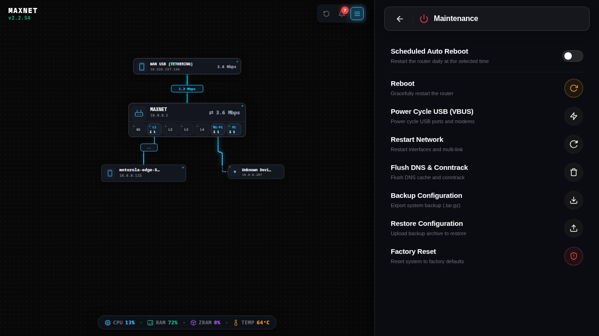
System Maintenance, Event Logs & Backup Management
A centralized administration hub designed for smooth router upkeep, diagnosis, and disaster recovery. Features live log viewers with instant keyword search and filtering to troubleshoot connection drops, hardware events, and system activities.
Safeguard your customized setup with one-click full configuration backups that can be exported or restored in seconds. It also includes safe restart controls and factory reset routines protected by safety-confirmation countdowns to prevent accidental data loss.
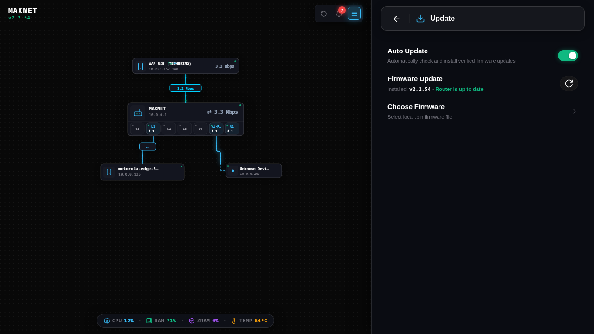
Firmware Management & One-Click System Updates
Keep your router operating system current with streamlined firmware updates. The system displays your active software release, build timestamp, and kernel version with an option to preserve your custom network settings, passwords, and user data across updates.
Every firmware package is validated for image compatibility and cryptographic SHA-256 integrity before flashing begins, safeguarding your router against corrupted files or incomplete downloads.
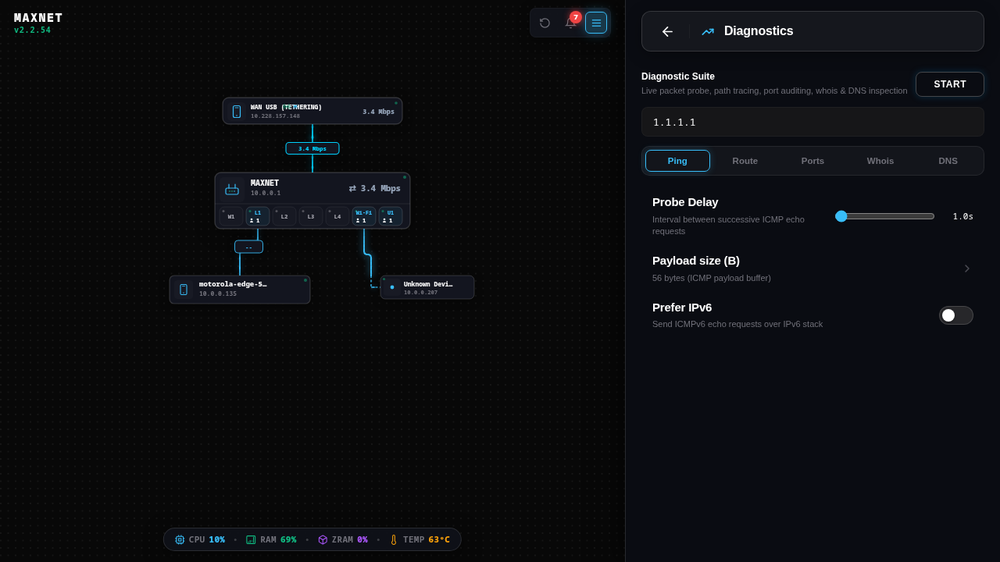
Network Diagnostics Suite & Connectivity Tools
A built-in diagnostic workbench for testing internet connectivity, gateway latency, and packet routes. Run instant ICMP ping tests against domain names or specific IP addresses to measure average, minimum, and maximum round-trip response times.
Includes visual traceroute mapping to identify network hops between your router and remote servers, alongside DNS lookup tools to verify name resolution speeds and troubleshoot routing bottlenecks quickly.
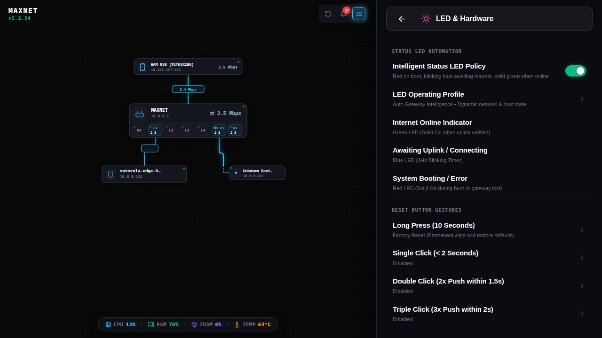
Physical Button Gestures & Smart LED Status
Customize the physical buttons on your router chassis with gesture-based actions. You can map short presses, double presses, or long presses to toggle Wi-Fi on and off, reset USB port power to revive a connected phone, or trigger a clean reboot without needing to log in to the web interface.
Front-panel LEDs provide intuitive real-time feedback on internet status, glowing green when online and switching colors during failovers. A scheduled night quiet mode lets you automatically dim or turn off bright LEDs during sleeping hours.
SUPPORTED HARDWARE & VERIFIED SPECIFICATIONS
Every router profile in Maxnet is custom-crafted and verified against the hardware's exact Device Tree (DTS) and driver subsystem:
QUESTIONS & ANSWERS
SUPPORT INDEPENDENT DEVELOPMENT
Maxnet is an independent, full-time engineering effort created without corporate sponsorship. Rather than pursuing a conventional corporate job, I have chosen to dedicate my full focus from home into building open-source firmware, unlocking carrier-restricted hardware, and giving users complete control over their routers without paywalls.
Currently, all kernel compilations, build pipelines, and firmware packaging are performed on a modest, low-budget laptop. If Maxnet has been valuable to you, small community contributions help support personal living expenses and fund a proper development machine to accelerate kernel builds, multi-platform testing, and ongoing device porting.
9824584454@ybl